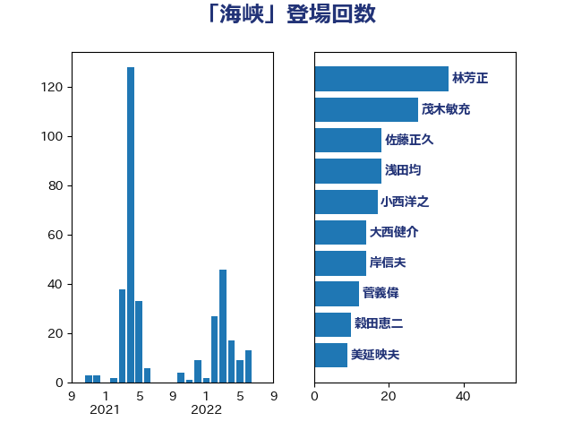

単語「海峡」

| 林芳正 | 自由民主党 | 36 回 |
| 茂木敏充 | 自由民主党 | 28 回 |
| 佐藤正久 | 自由民主党 | 18 回 |
| 浅田均 | 日本維新の会 | 18 回 |
| 小西洋之 | 立憲民主党 | 17 回 |
| 大西健介 | 立憲民主党 | 14 回 |
| 岸信夫 | 自由民主党 | 14 回 |
| 菅義偉 | 自由民主党 | 12 回 |
| 穀田恵二 | 日本共産党 | 10 回 |
| 美延映夫 | 日本維新の会 | 9 回 |
| 國場幸之助 | 自由民主党 | 7 回 |
| 岸田文雄 | 自由民主党 | 7 回 |
| 石井章 | 日本維新の会 | 7 回 |
| 赤嶺政賢 | 日本共産党 | 6 回 |
| 和田有一朗 | 日本維新の会 | 4 回 |
| 重徳和彦 | 立憲民主党 | 4 回 |
| 三木亨 | 自由民主党 | 3 回 |
| 上田清司 | 国民民主党 | 3 回 |
| 佐藤茂樹 | 公明党 | 3 回 |
| 加藤勝信 | 自由民主党 | 3 回 |
| 大塚耕平 | 国民民主党 | 3 回 |
| 太栄志 | 立憲民主党 | 3 回 |
| 岡田克也 | 立憲民主党 | 3 回 |
| 柴田巧 | 日本維新の会 | 3 回 |
| 渡辺周 | 立憲民主党 | 3 回 |
| 鈴木貴子 | 自由民主党 | 3 回 |
| 小野寺五典 | 自由民主党 | 2 回 |
| 山添拓 | 日本共産党 | 2 回 |
| 斉藤鉄夫 | 公明党 | 2 回 |
| 杉本和巳 | 日本維新の会 | 2 回 |
| 玄葉光一郎 | 立憲民主党 | 2 回 |
| 石川博崇 | 公明党 | 2 回 |
| 篠原豪 | 立憲民主党 | 2 回 |
| 紙智子 | 日本共産党 | 2 回 |
| 緒方林太郎 | 無所属 | 2 回 |
| 逢坂誠二 | 立憲民主党 | 2 回 |
| 青木愛 | 立憲民主党 | 2 回 |
| 高木啓 | 自由民主党 | 2 回 |
| 鬼木誠 | 立憲民主党 | 2 回 |
| 黄川田仁志 | 自由民主党 | 2 回 |
| 中山展宏 | 自由民主党 | 1 回 |
| 中西祐介 | 自由民主党 | 1 回 |
| 井上哲士 | 日本共産党 | 1 回 |
| 井上英孝 | 日本維新の会 | 1 回 |
| 井上貴博 | 自由民主党 | 1 回 |
| 井林辰憲 | 自由民主党 | 1 回 |
| 伊波洋一 | 無所属 | 1 回 |
| 北村経夫 | 自由民主党 | 1 回 |
| 北神圭朗 | 無所属 | 1 回 |
| 和田政宗 | 自由民主党 | 1 回 |
| 城内実 | 自由民主党 | 1 回 |
| 大島敦 | 立憲民主党 | 1 回 |
| 掘井健智 | 日本維新の会 | 1 回 |
| 末松義規 | 立憲民主党 | 1 回 |
| 杉田水脈 | 自由民主党 | 1 回 |
| 松川るい | 自由民主党 | 1 回 |
| 枝野幸男 | 立憲民主党 | 1 回 |
| 榛葉賀津也 | 国民民主党 | 1 回 |
| 浜口誠 | 国民民主党 | 1 回 |
| 浜地雅一 | 公明党 | 1 回 |
| 猪口邦子 | 自由民主党 | 1 回 |
| 緑川貴士 | 立憲民主党 | 1 回 |
| 荒井優 | 立憲民主党 | 1 回 |
| 西銘恒三郎 | 自由民主党 | 1 回 |
| 鈴木敦 | 国民民主党 | 1 回 |
| 鈴木英敬 | 自由民主党 | 1 回 |
| 馬場伸幸 | 日本維新の会 | 1 回 |
| 高市早苗 | 自由民主党 | 1 回 |
| 高木かおり | 日本維新の会 | 1 回 |
| 高橋光男 | 公明党 | 1 回 |
| 高橋千鶴子 | 日本共産党 | 1 回 |